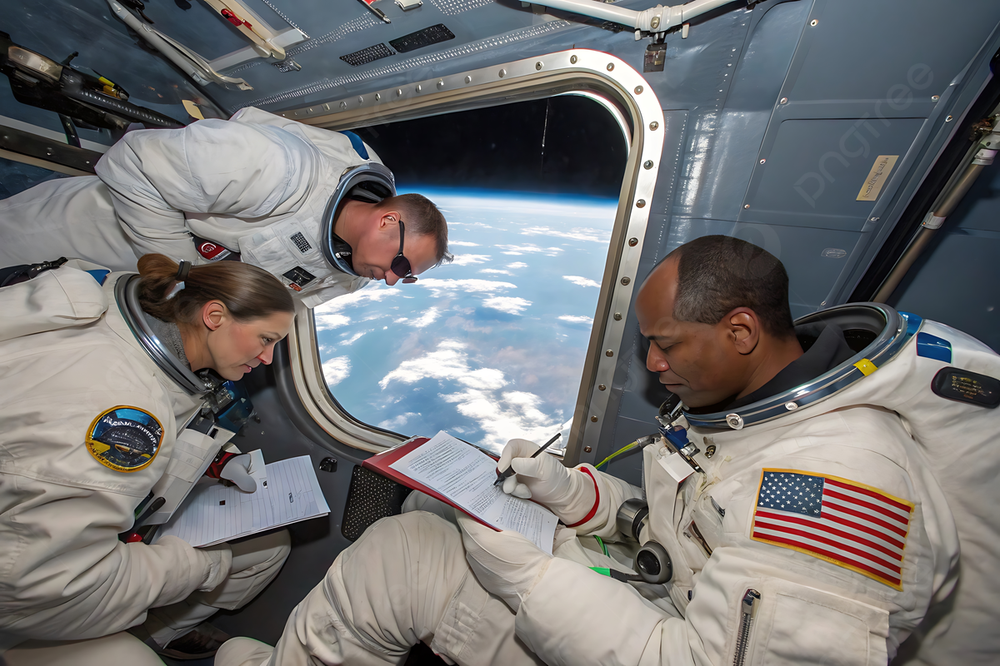
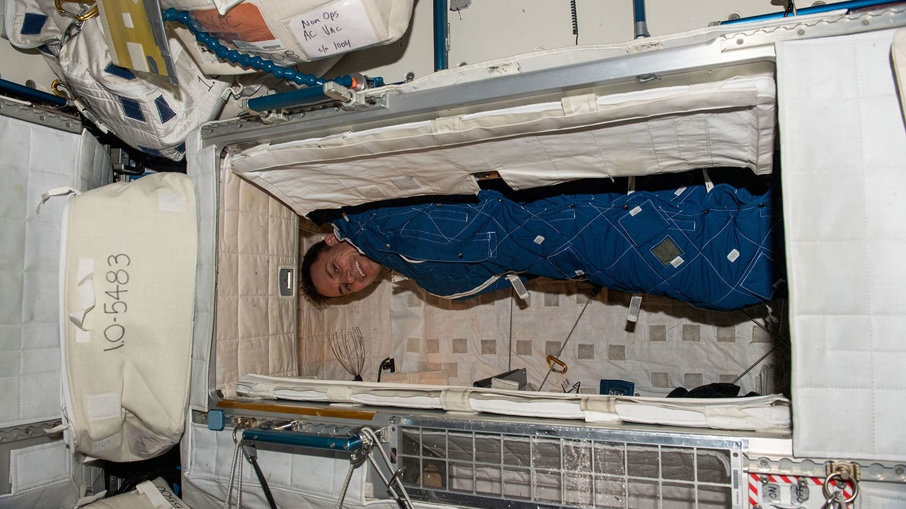
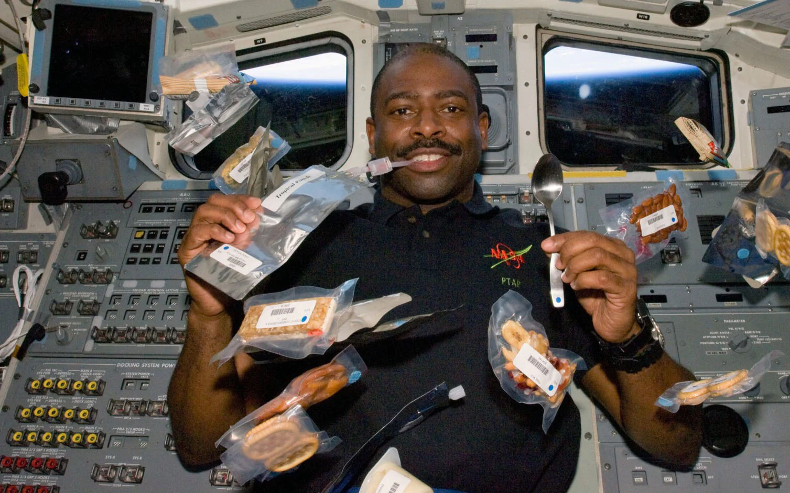
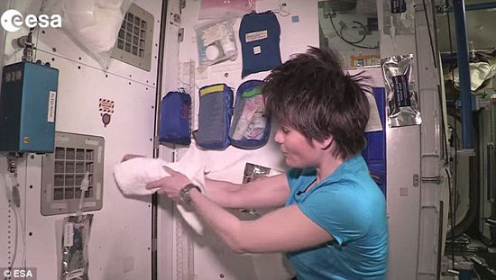
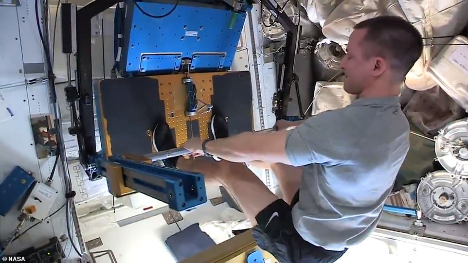
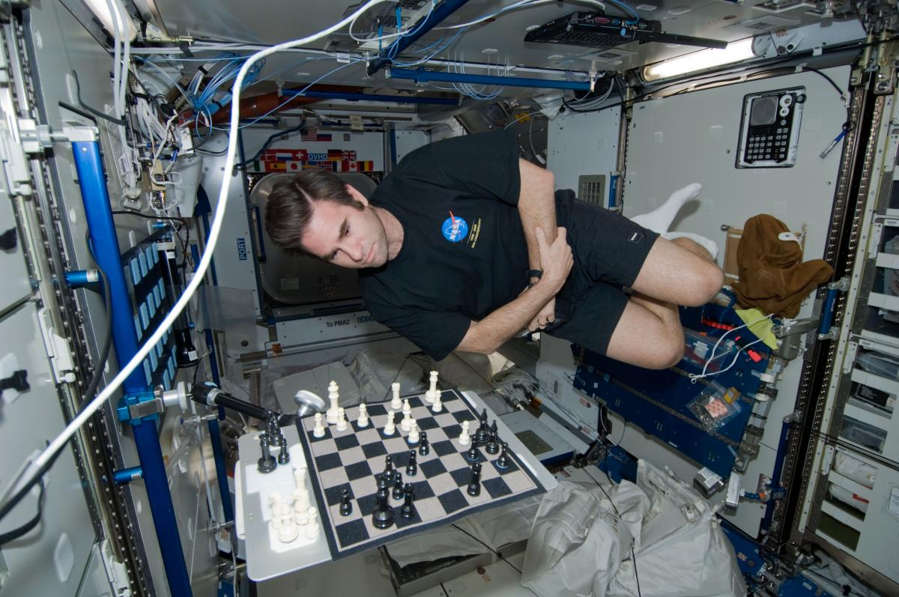
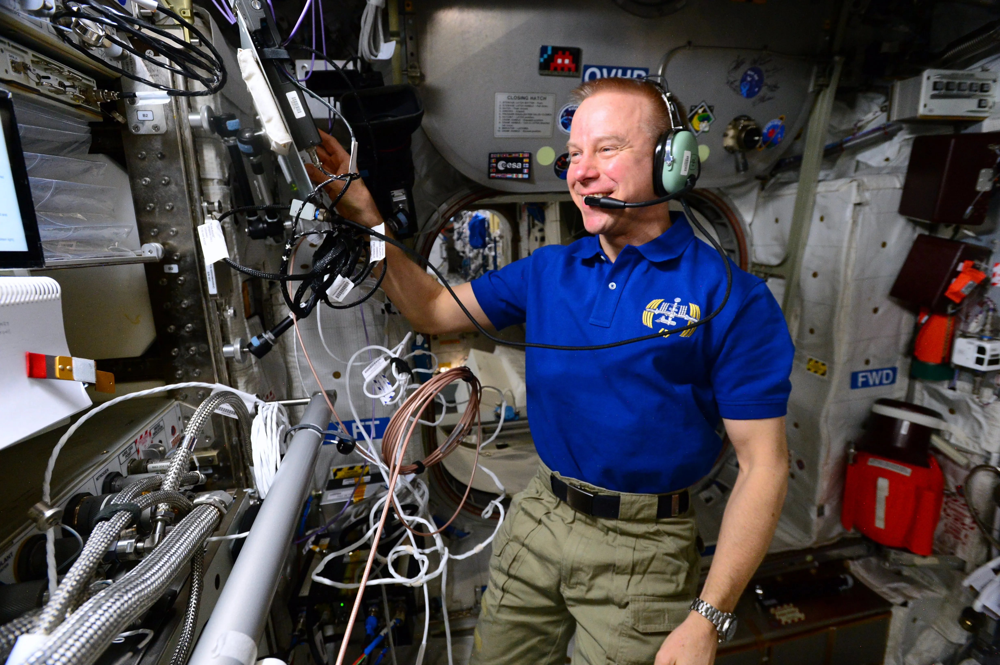

استكشف بالتفصيل الروتين اليومي، التحديات، والتفاصيل المثيرة للحياة في بيئة الجاذبية الصغرى. من الاستيقاظ حتى النوم، كل شيء مختلف في الفضاء!
كيف يبدأ رواد الفضاء يومهم وينهونه
التحديات والحلول للنوم في انعدام الجاذبية
كيف يتم إعداد وتناول الطعام في الفضاء
الاستحمام، تنظيف الأسنان، واستخدام المرحاض
لماذا التمرين ضروري وكيف يتم في الفضاء
كيف يقضي رواد الفضاء وقت فراغهم
تأثير الحياة في الفضاء على الجسم والعقل
كيف يتواصل رواد الفضاء مع عائلاتهم وفرق الدعم
يتبع رواد الفضاء على متن محطة الفضاء الدولية جدولاً زمنياً صارماً يشبه إلى حد كبير الجدول المتبع على الأرض، مع بعض الاختلافات الرئيسية بسبب بيئة الجاذبية الصغرى.
يعمل الرواد عادة 10-12 ساعة يومياً من الإثنين إلى الجمعة، ونصف يوم يوم السبت. يوم الأحد هو يوم عطلة كاملة يمكنهم فيه الراحة وممارسة الهوايات والاتصال بعائلاتهم.


النوم في الفضاء يختلف تماماً عن النوم على الأرض. بدون الجاذبية، لا يوجد "أعلى" أو "أسفل"، ويمكن للرواد النوم في أي اتجاه يريدون.
يواجه بعض الرواد صعوبة في النوم خلال الأيام الأولى بسبب عدم وجود شروق وغروب للشمس كل 24 ساعة (تشهد المحطة 16 شروقاً وغروباً يومياً). يستخدم البعض منهم أدوية للمساعدة على النوم في البداية.
نظام الطعام على متن المحطة الفضائية تطور كثيراً عن الأيام الأولى لرحلات الفضاء. اليوم، يتمتع الرواد بتنوع معقول في وجباتهم، رغم التحديات الفريدة للأكل في الجاذبية الصغرى.
يحصل الرواد على وجبات متنوعة تشمل اللحوم والمعكرونة والفواكه والخضروات. كما توجد بهارات سائلة (مثل صلصة الطماطم والخردل) لإضافة نكهة للطعام. يتم شحن الطعام بشكل دوري على متن مركبات الشحن.


الحفاظ على النظافة الشخصية في الفضاء يتطلب حلولاً إبداعية. بدون الجاذبية، لا يمكن للرواد الاستحمام بالطريقة التقليدية، ويجب عليهم التكيف مع طرق بديلة.
يتم إعادة تدوير حوالي 80% من المياه على المحطة، بما في ذلك البول والعرق. هذه الأنظمة ضرورية للبعثات طويلة الأمد حيث يكون توفير المياه أمراً بالغ الأهمية. يتم تجفيف المناشف المستخدمة وإعادة استخدامها عدة مرات قبل التخلص منها.
التمرين ليس رفاهية على متن المحطة الفضائية، بل هو ضرورة طبية. في الجاذبية الصغرى، يفقد الجسم العظام والعضلات بسرعة إذا لم يتم تحفيزها بالتمارين.
يمارس الرواد التمارين لمدة ساعتين على الأقل يومياً للحفاظ على كتلة العظام والعضلات وصحة القلب. بدون هذا الروتين، سيفقدون ما يصل إلى 1-2% من كتلة العظام شهرياً، وهو ما يعادل معدل فقدان العظام لشخص مسن على الأرض في عام كامل.


رغم الجدول المزدحم، يحصل رواد الفضاء على وقت للراحة والترفيه. يقضون هذا الوقت في أنشطة متنوعة تساعدهم على الاسترخاء والاتصال بالأرض.
أحد أكثر الأنشطة شعبية بين الرواد هو مراقبة الأرض من نوافذ المحطة، خاصة قبة المراقبة (Cupola) التي توفر منظراً بانورامياً مذهلاً. كثير من الرواد يصبحون مصورين محترفين نتيجة قضاء ساعات في تصوير الأرض من الفضاء.
يظل رواد الفضاء على اتصال دائم بالأرض عبر أنظمة اتصال متطورة. هذا الاتصال ضروري للعمل والدعم النفسي على حد سواء.
يتم الاتصال عبر شبكة الأقمار الصناعية لتتبع وترحيل البيانات (TDRS) التابعة لناسا. عندما تكون المحطة خارج نطاق هذه الأقمار، يتم تخزين الرسائل وإرسالها عند العودة إلى النطاق. هناك تأخير بسيط في الاتصالات (بضع ثوانٍ) بسبب المسافة.

الحياة في الفضاء لا تخلو من التحديات. يواجه الرواد تغيرات فسيولوجية ونفسية تحتاج إلى تكيف مستمر ودعم من فرق الأرض.
لتخفيف هذه التحديات، تتبع ناسا ووكالات الفضاء الأخرى بروتوكولات دعم متعددة: